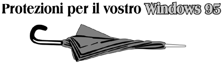

Informazioni
Chi Siamo?
Listino Servizi
Aziende
Agropoli
Utenti web
Servizi
Utilità Varie
Archivio
Richiesta file
Help per Utenti
Navigare
Ricerca
Forum R.C.A.
Messaggi GSM
Previsioni Meteo
Chi c'è on line?

|

| |
Non ti è mai capitato (mentre sei collegato)
di vedere una schermata blu o la freccetta del mouse bloccata?
Si?? Allora puoi scaricare questi file (Distribuiti dalla stessa Microsoft)
che correggono alcuni errori di programmazione (BUGS) presenti in Windows 95.
NOTA: si consiglia di installare i patch seguendo questo ordine
(1) wsockupd.exe - (2) vipup11.exe - (3) vtcpup11.exe.
| Winsock Update (188Kb) |
| Insieme al Kernel32 Update questo fix
aggiorna il sistema di comunicazione di Windows95. |
| TEARDROP & ICMP Patch (162Kb) |
| Descrizione BUG: TearDrop è un programma che BLOCCA
Windows, mandando pacchetti al vostro computer.
Windows non riesce a manipolare questi dati
e il computer si blocca causando una schermata blu. |
| LAND & OUT-OF-BAND Patch (151Kb) |
| Descrizione BUG: WinNuke è un programma che blocca una macchina
Windows inviando "Out of Band data"
ad un indirizzo IP.
Un errore o una schermata BLU appare quando una macchina Windows
viene "nukata." |
| Kernel32 Update (329Kb) |
| Questo corregge vari problemi relativi
al funzionamento della memoria dovuti a "buchi di memoria"
quando si usa a lungo l'accesso remoto.
Se stai usando un programma di comunicazione o di
connessione questo fix può prevenire eventuali blocchi.
| | |